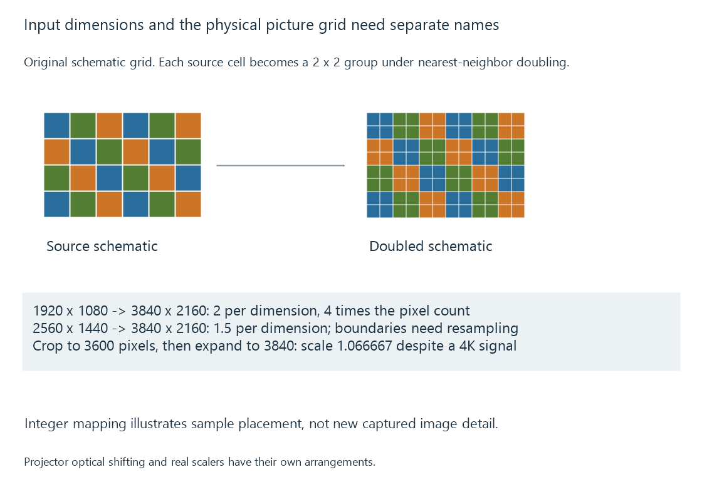

Native display resolution
Native display resolution describes the physical imaging grid, which remains distinct from the accepted input mode and the resolution of the source picture.
The resolution of a movie, the output mode of its player and the display’s physical imaging grid can be three different things.
Native resolution describes that physical grid. For a conventional fixed-pixel flat panel, it is the number of addressable pixel positions across and down the panel.
| Resolution being discussed | Example |
|---|---|
| Encoded source picture | 1920 × 1080 |
| Player’s selected output | 3840 × 2160 |
| Panel’s native grid | 3840 × 2160 |
In this example, the source has 2,073,600 pixel positions and the panel has 8,294,400. The larger output does not create four times as much captured detail.
Mapping the source onto the grid
Scaling 1920 × 1080 to 3840 × 2160 doubles each dimension. An ideal nearest-neighbour exercise could assign each source pixel to a two-by-two group of panel positions.
A practical video scaler usually reconstructs a smoother picture using neighbouring samples. Its result depends on the chosen filtering and on the source’s chroma resolution, not just the integer ratio.

A 2560 × 1440 source enlarged to the same panel has a 1.5 ratio in each dimension. Source edges no longer all land on integer panel boundaries. The scaler must decide how source samples contribute to the new grid.
Video scaling develops those reconstruction choices. Resolution identifies the grids; it does not identify the quality of their mapping.
One-to-one requires the complete visible mapping
Sending the panel’s native dimensions is one condition for direct pixel mapping. The display must also show the intended full active picture without overscan, zoom or another resampling step.
If a 3840-pixel-wide input is cropped to 3600 pixels and then enlarged to the panel width, the horizontal scale is:
3840 / 3600 = 1.066667
It is a roughly 6.67% enlargement despite the input and panel both being described as 4K. A subtitle or test pattern near the edge may reveal the crop more readily than a landscape.
Desktop scaling is a separate layer: an application can render its interface at a logical size before the output signal is produced. A small screenshot is consequently not always evidence of the physical output mode.
Accepted resolution is an input capability
A display can accept a signal larger or smaller than its native grid and convert it internally. An advertised input resolution may therefore describe compatibility rather than the imaging hardware.
For an Emby session, a lower-resolution delivered stream can still be presented through the client’s established high-resolution desktop or TV mode. The app’s Direct Play or transcoding decision concerns the media representation, while the output mode concerns its local presentation.
The display path helps identify where the mapping occurs.
Projectors can create several positions over time
Some projectors use optical pixel shifting: an actuator changes the projected position of an imaging device between sub-images. TI documents two-way and four-way mechanisms for relevant DLP arrangements.
The physical imager grid, the accepted source dimensions and the positions addressed on the screen during a frame then need separate descriptions. Calling every such product simply “native 4K” or “not 4K” loses the mechanism.
Compare the stated imager arrangement, sub-image sequence and delivered picture. The lens, focus and viewing surface also determine whether the resulting detail is visible. Projectors develops that final optical route.
See Also
- Video Display Aspect Ratio
- Projectors and the viewing surface
- HDMI video transport
- How Video Scaling Works